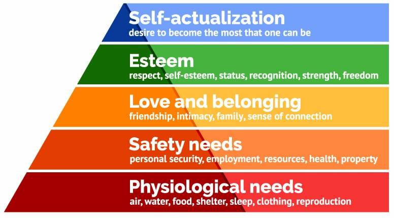

The Quality of Life Index:
The Quality of Life (QoL) Index is an estimation of overall quality
of life. The higher the QoL index score, the better.
The barchart "Quality of Life Index for top 60 countries" shows the top 60
highest scoring countries on the QoL index, for the year 2018 or 2013. This barchart gives excellent oppurtunity to compare the change in QoL scores in 5 years time. It is interesting to discover that the countries making the top 60, have changed in only 5 years. Furthermore, the steepness of the decreasing bars, show that in 2013 the difference between the top 60 countries was much bigger than in 2018. This visualizes that world wide, equality between countries is rising.
But, striking, the scores on the QoL overall have declined in these 5 years.
The highest scoring country in 2013 scored 215 while number 1 in
2018 scored only 197, a remarkable difference!
To calculate the QoL score, these indices are used:
- Purchasing power index (higher is better)
- Safety index (higher is better)
- Health care index (higher is better)
- Pollution index (lower is better)
- House price to income ratio (lower is better)
- Cost of living index (lower is better)
- Traffic commute time index (lower is better)
- Climate index (higher is better)
The first three indices are shown in chart "Scores on three indices for lowest scoring, selected and highest scoring country", so that scores on the three indices can be compared between countries. These three indices are displayed because they weigh more in the calculation of the overall QoL score. This is easily understood when looking at The Pyramid of Maslow.

The Pyramid of Maslow
He established a framework of the human needs. Most important are the basic physiological needs such
as water, food, clothing and shelter. The Purchasing Power Index shows us
how well these needs can be obtained. The next big need in the hierarchy
according to Maslow, is represented in the Safety Index and Health Care Index.
Furthermore, these three indices are easily interpreted when
showed in one graph, because they all are 'the higher the better'.